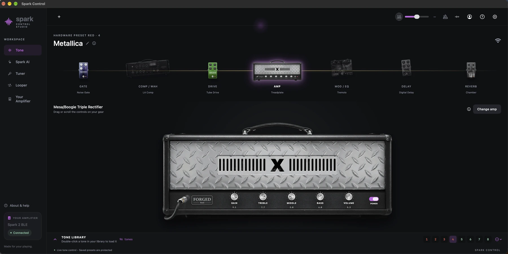
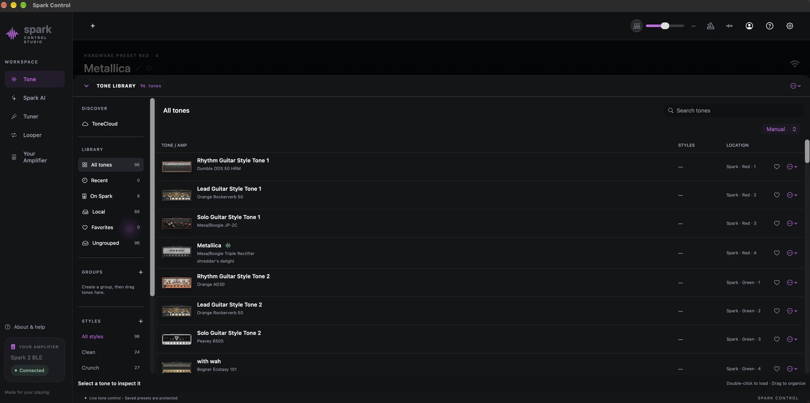
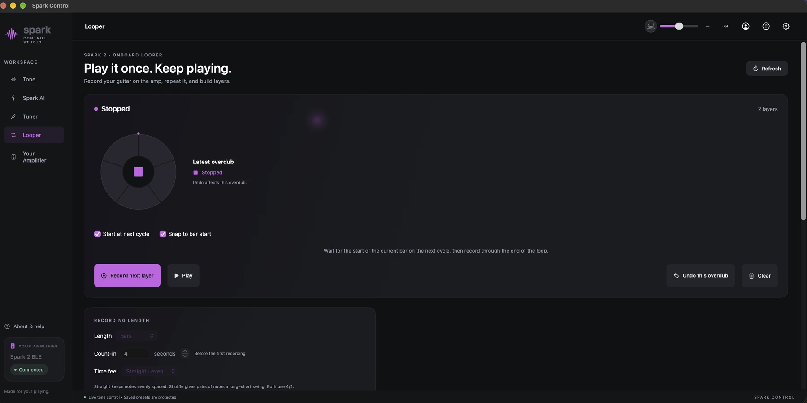

Independent companion for your Mac
Help for your next session.
Connection help, privacy information, and setup guides for Spark Amp Control. In the app, you’ll see the name SparkControl.

Get support
Connect your amp, resolve common issues, or send a question.
Find an answer →Connect an AI assistant
Set up local MCP access and see exactly which tools are available.
Read the setup guide →Your privacy
What stays on your Mac, what optional services receive, and your choices.
Read the Privacy Policy →Terms & service information
App licensing, third-party services, and compatibility.
Read the Terms of Use →Inside the app
A closer look at your workspace.
Organize your tones, then keep the next take within reach.


Before you connect
Requires macOS 27 or later. Hardware control has been tested with Spark 2. Compatibility with other Spark models is not verified. You can explore the app in demo mode without an amplifier or account.